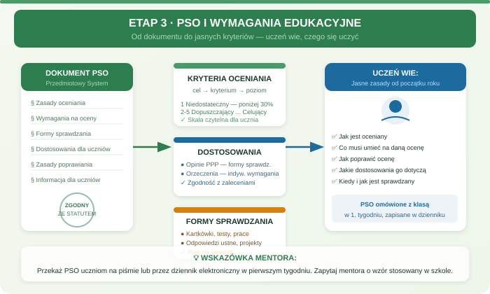

Zadania mentora
- Sprawdzić, czy nauczyciel ma szablon PSO lub zasady jego przygotowania.
- Omówić wymagania edukacyjne i plan wynikowy.
- Wyjaśnić spójność z wewnątrzszkolnym systemem oceniania.
- Sprawdzić źródło informacji o uczniach z dostosowaniami.
Etap 3
Cel: zamknąć PSO, wymagania edukacyjne, plan wynikowy i zasady oceniania przed utrwaleniem pierwszych ocen.

Wpisz: status PSO, status wymagań edukacyjnych, termin przekazania dokumentów i pytania do osoby odpowiedzialnej.
Mentor sprawdza, czy nauczyciel potrafi wyjaśnić uczniowi: za co jest ocena, jak można ją poprawić, jak wygląda informacja o zagrożeniu i jak dokumentowane są dostosowania.
Największe ryzyko to pierwsze oceny wpisane przed ustaleniem jasnych zasad. Jeżeli dokument nie jest gotowy, mentor pomaga ustalić minimalny zakres i termin zamknięcia.